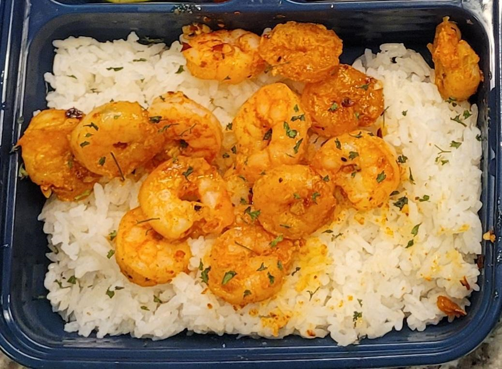

BBQ Ribs

Here's a basic and flavorful dry rub recipe for chicken wings, with added heat that you can control!
Ingredients:
- 2 lbs chicken wings, split at joints, tips discarded
- 2 tablespoons brown sugar
- 1 tablespoon smoked paprika
- 1 tablespoon garlic powder
- 1 tablespoon onion powder
- 1 teaspoon cayenne pepper (adjust for desired spice level)
- 1 teaspoon black pepper
- 1 teaspoon salt
- 1 teaspoon dried thyme
- 1 teaspoon ground cumin
Instructions:
- Preheat your oven to 400°F (200°C).
- In a bowl, mix together all the dry ingredients: brown sugar, smoked paprika, garlic powder, onion powder, cayenne pepper, black pepper, salt, dried thyme, and ground cumin.
- Pat the chicken wings dry with paper towels. This helps the dry rub adhere better to the wings.
- Place the wings in a large bowl and sprinkle the dry rub over them. Toss the wings until they are evenly coated with the seasoning. Alternatively, you can place the wings and dry rub in a large zip-top bag and shake to coat.
- Arrange the coated wings on a baking sheet lined with parchment paper or a wire rack.
- Bake in the preheated oven for about 40-45 minutes or until the wings are golden brown and crispy. Flip the wings halfway through the cooking time to ensure even cooking.
- Once done, remove the wings from the oven and let them rest for a few minutes before serving.
These dry-rubbed chicken wings are delicious on their own, but you can certainly add your favorite sauces for extra flavor. Whether it's buffalo, barbecue, or honey mustard, these wings serve as a versatile base. Enjoy!